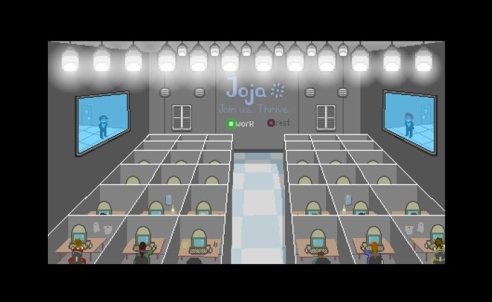
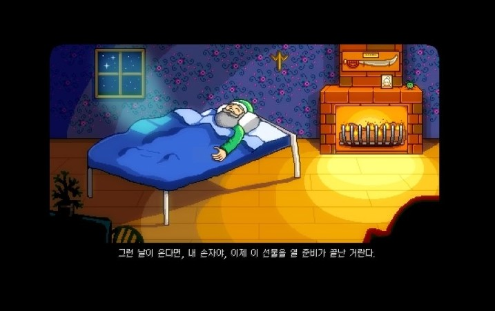
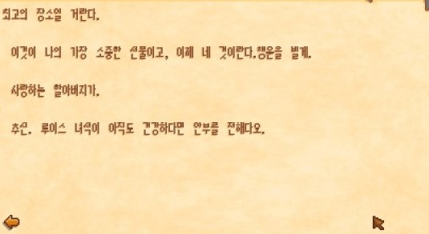
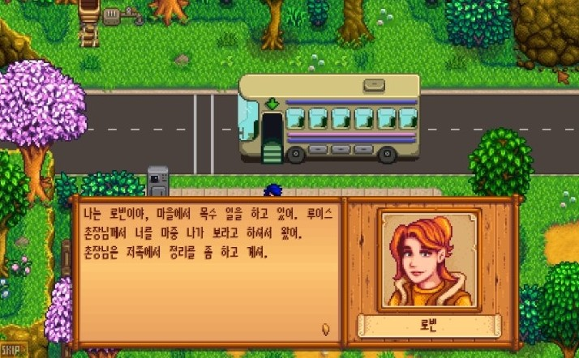
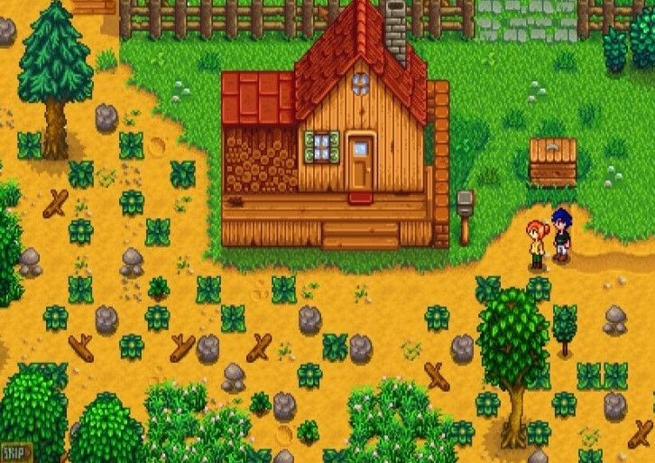

Stroy
대기업 조자 그룹에 근무하던 평범한 사원으로 기계처럼 일하는 삶에 염증을 느끼던 찰나
할아버지가 남긴 편지를 꺼내 읽고서 물 좋고 공기 좋은 남쪽 계곡, 스타듀 밸리로 이사를 온다.
처음 농장에 도착했을 때에는 관리가 전혀 안 된 모습을 보고 경악하나,
할아버지가 생전 농사짓던 땅이기도 하고,
사랑하는 손주인 주인공에게 삶의 전환점을 선물하기 위해 물려 준 할아버지를 생각하며
이내 농장일에 적응해 가며 마을에 일원으로 녹아든다.
    